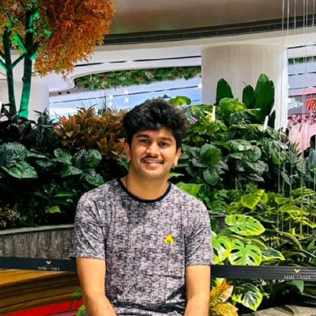

Full stack development
Enterprise interfaces and Node.js dashboards, with experience across frontend architecture and backend integration.
- React
- Preact
- Node.js
- JavaScript
A different look. The same work.
FULL STACK ENGINEER · APPLIED AI
10+ years across frontend, backend, and mobile. Building cloud interfaces and bringing generative AI into developer workflows at Oracle.

From mobile to cloud.
Built with teams at


01 / TECHNICAL EXPERTISE
Frontend, backend, AI, and IoT.
The skills behind the work.
Enterprise interfaces and Node.js dashboards, with experience across frontend architecture and backend integration.
Practical generative AI integrations, including an internal assistant that brings AI into everyday development workflows.
Android applications and connected-device projects, including a medicine reminder kit and face detection and tracking systems.
End-to-end testing, functional automation, and dashboards that help teams operate and maintain production applications.
02 / SELECTED WORK
Enterprise experience.
Practical impact.
Lean interfaces for complex cloud workflows. React-to-Preact migration, reusable UI architecture, and automated validation.
View contributionsAn internal assistant that brings generative AI into everyday engineering, alongside reusable templates and automated tests.
View experienceA React and Node.js dashboard for automation runs, plus Catalyst Center interfaces for wireless controller management.
View contributionsA JavaScript-only collapsing header and tab bar for React Native. Built to make mobile interactions feel natural.
View on GitHub03 / EXPERIENCE
Building and maintaining the interfaces behind Oracle Cloud Infrastructure, with a focus on performance, consistency, and developer experience.
Connecting product engineering with operational insight, across enterprise networking, full stack dashboards, and mobile experiences.
Developed Android and cross-platform applications for consumer and enterprise products, alongside Python and IoT projects.
04 / ABOUT
I’m a Bengaluru-based software engineer with experience spanning Android applications, enterprise networking, and cloud platforms at Compassites, Cisco, and Oracle.
My work covers implementation, framework migrations, test automation, and production operations. I focus on maintainable interfaces, reusable architecture, and tools that improve the development process.
Visvesvaraya Technological University · 2011–2015
05 / WRITING
06 / CONTACT
Have a project, an opportunity, or an engineering challenge in mind? I’d be happy to connect.
Based in Bengaluru, India